GodSaveTheScreen
Capture screenshots, annotate them clearly and share them in seconds – with shapes, arrows, text, callouts, numbers, blur, magnifier, stamps and much more.
Welcome
GodSaveTheScreen is a screenshot tool for Windows. It runs quietly in the notification area of the taskbar, captures an area of the screen with a keyboard shortcut and opens the result in an editor. There you place objects – frames, arrows, text, markers – on top of the image. The image itself never changes: every object can be moved, changed or deleted until the very end.
This guide follows the path of a screenshot: from capturing through editing in the editor with its tools to saving and sharing. The chapters Settings, Keyboard shortcuts and Tips and troubleshooting are for reference.
The workflow in three steps
Capture
Press the shortcut (default Ctrl+Shift+1), drag an area – done.
Annotate
Point out what matters in the editor with arrows, text, numbers or blur.
Share
Copy, save as an image, drag into another app or keep as a project.
Help everywhere: F1 opens this guide. Shift+F1 jumps straight to the section about the current tool, the selected objects or the open settings page.
Getting started
Installation and portable mode
GodSaveTheScreen comes with a setup or as a ZIP archive. The program is a single file GodSaveTheScreen.exe that already contains the .NET runtime. This guide sits next to it as GodSaveTheScreen-Help.html (English) and GodSaveTheScreen-Hilfe.html (German).
With the setup: run GodSaveTheScreen-…-Setup.exe and choose Install. Under Options you decide whether GodSaveTheScreen is installed Just for me (no administrator rights, into %LOCALAPPDATA%\Programs) or For all users of this computer (into “Program Files”). Turn on “Start with Windows” afterwards in the settings. The setup adds a Start menu shortcut and associates project files (.gsts) with the editor. Uninstall via Settings → Apps; your settings and backups are kept. For software deployment in companies there is also an MSI package (see Deployment in companies).
As a ZIP (no installation):
- Extract the ZIP archive into any folder.
- Start GodSaveTheScreen.exe.
- If Windows shows “Windows protected your PC”, click More info → Run anyway (the EXE is not signed).
By default, settings are stored in %APPDATA%\GodSaveTheScreen, logs and automatic backups in %LOCALAPPDATA%\GodSaveTheScreen.
Portable mode: place an empty file portable.txt next to the EXE. GodSaveTheScreen then keeps all data in the data folder beside it – handy for USB sticks.
The program in the notification area
After starting, GodSaveTheScreen keeps running in the notification area of the taskbar (bottom right, next to the clock), even when all windows are closed. On the very first start a welcome window explains the most important shortcuts.
- Left-click the icon to start a capture (default: rectangle; configurable under General).
- Right-click opens the menu: capture modes, With timer, Open image…, Recent files, Start window, Settings, Help and Exit.
Recently used files also appear in the program's jump list on the taskbar.
The start window
The start window is the classic entry point for mouse users. It appears when the program starts (unless “Start minimized to the tray” is on) and can be opened at any time from the tray menu.
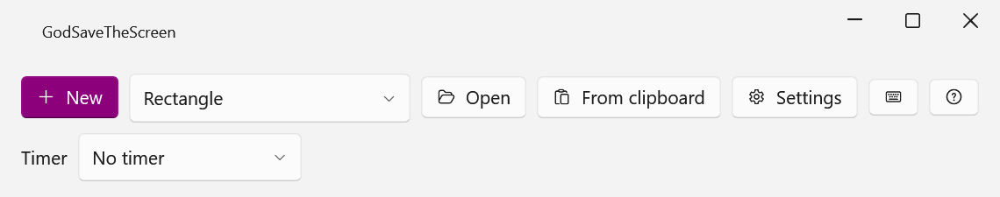
| Element | Function |
|---|---|
| New + mode | Starts a capture in the selected mode: rectangle, window, freeform, full screen (current monitor) or full screen (all monitors). |
| Open | Opens images or projects (.gsts) in the editor. |
| From clipboard | Opens the image on the clipboard in the editor (also Ctrl+V). |
| Settings | Opens the settings. |
| Keyboard icon | Overview of all keyboard shortcuts (Ctrl+F1). |
| Question mark | This help (F1). |
| Timer | Delays the next capture (see Timer). |
| Recent files | List with thumbnails; double-click or Enter opens, Del removes an entry. The list appears once files have been opened or saved. |
You can also drag image files onto the start window to open them in the editor.
Your first capture in one minute
- Press Ctrl+Shift+1. The screen freezes and dims.
- Hold the left mouse button, drag the desired area and release.
- The editor opens with the capture. Press A and drag an arrow, press T to type some text.
- Ctrl+C copies the finished image – paste it into an email or chat. Or press Ctrl+S to save.
Capturing
Start a capture with a global shortcut, the tray icon, the start window or New in the editor. As soon as the capture begins, GodSaveTheScreen freezes the screen – menus and tooltips stay visible while you select the area. GodSaveTheScreen's own windows do not appear in captures.
Capture modes
| Mode | Default shortcut | How it works |
|---|---|---|
| Rectangle | Ctrl+Shift+1 | Drag a rectangular area with the mouse button held down. |
| Window | Ctrl+Shift+2 | The window under the mouse pointer is highlighted; a click captures it. Dragging selects a free area instead. |
| Freeform | Ctrl+Shift+3 | Hold the mouse button and draw any shape around the area (lasso). Outside the shape the image becomes transparent. |
| Full screen | Ctrl+Shift+4 | Immediately captures the monitor the mouse pointer is on. The start window additionally offers “Full screen (all monitors)”. |
Selecting the area
While you select, a dimmed layer covers all monitors. The selected area appears bright and its size is shown in pixels. A magnifier at the mouse pointer helps with pixel-precise placement (can be turned off under Capture).
| Key | Effect |
|---|---|
| Esc | Cancel the capture |
| Enter | Accept the current area |
| ← → ↑ ↓ | Move the selection by 1 pixel, with Shift by 10 pixels |
Timer
The timer delays the capture – for example to open a menu first. In the start window choose a delay under Timer or Custom… with any number of seconds. The tray menu offers With timer. A countdown shows the remaining time; optionally a sound plays during the last three seconds. Set the default timer for shortcuts and the tray under Capture.
Shortcuts and the Print Screen key
The global shortcuts work in every program. Change them under Settings → Hotkeys. If a combination is already used by Windows or another program, it is shown there.
Print Screen key: on Windows 11 the PrtSc key normally opens the Snipping Tool. To assign it to GodSaveTheScreen, first turn off “Use the Print screen button to open screen capture” in Windows under Settings → Accessibility → Keyboard.
What happens after a capture
After every capture GodSaveTheScreen performs the steps configured under After capture – in this order:
- Copy to the clipboard – the image can be pasted right away.
- Save automatically – into a fixed folder with a file name pattern; a notification shows where (click opens the folder).
- Open in the editor – for annotating (default).
The editor
In the editor you annotate the capture. Every capture and every opened file gets its own editor window. Everything you add is an independent object on top of the image – the original image is never changed.
Window layout
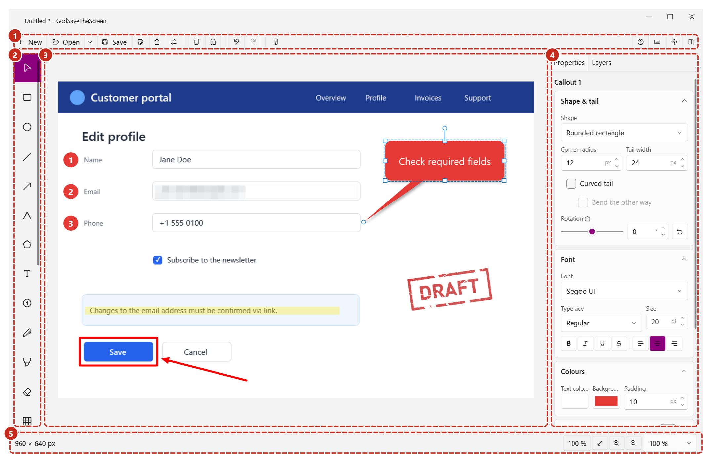
- Command bar – New, Open, Save, Export, Copy, Paste, Undo, Ruler and on the right Help, Keyboard shortcuts, Drag image out, Show/hide properties panel (details).
- Tool bar – all tools; each has a single-letter shortcut.
- Canvas – the image with all objects (zoom and pan).
- Properties panel – settings of the tool or the selection, and the layers.
- Status bar – image size, pointer position in pixels and zoom.
Command bar
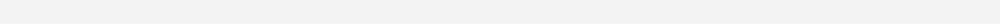
| Button | Function |
|---|---|
| New | Menu: new capture (rectangle, window, freeform, full screen) or From clipboard. |
| Open ▾ | Open a file (Ctrl+O); the arrow shows recent files. |
| Save | Saves (Ctrl+S); next to it Save as… (Ctrl+Shift+S) – see Saving. |
| Export | Export the result as an image file without changing the project state (Export). |
| Save options | Format, quality and background for transparent areas (details). |
| Copy / Paste | Copy or paste the image (Clipboard). |
| Undo / Redo | Ctrl+Z / Ctrl+Y |
| Ruler | Shows the ruler (Ctrl+R). |
| Help | This guide (F1). |
| Keyboard shortcuts | Overview of all shortcuts with a search box (Ctrl+F1). |
| Drag handle | Drag the finished image into another program with the mouse (drag and drop). |
| Properties panel | Shows or hides the right side panel. |
Canvas, zoom and panning
- Zoom: Ctrl + mouse wheel (the point under the pointer stays put), Ctrl++ / Ctrl+-, or the zoom box in the status bar.
- Fit (Ctrl+0) shows the whole image, 100 % (Ctrl+1) the actual size.
- Pan: hold the Space bar and drag – or drag with the middle mouse button.
- Beyond the edge: if objects extend beyond the image, the canvas grows with them. The extra area is shown as a checkerboard and is transparent in a saved PNG (JPG/BMP: white).
Ruler
The virtual ruler (Ctrl+R) helps to draw straight lines with the pen and highlighter: start a stroke close to the ruler's edge and it snaps to the edge.
- Move the ruler: click on it and drag.
- Rotate: mouse wheel over the ruler (1°), with Shift 15°, with Ctrl 0.1°.
- Right-click the ruler: set an angle directly or hide the ruler.
Properties panel
The settings are on the right of the editor. What they show depends on what is active:
- A drawing tool, nothing selected: heading Defaults: …. The values apply to all new objects of this tool and are kept across restarts.
- Objects selected: the values apply to the selection. Changes also become the tool's new defaults.
Settings are grouped in cards such as Appearance, Font, Outline, Shadow. Click a card's header to expand or collapse it; collapsed, the header shows a summary (colour, width). The expanded state is remembered and applies to all tools.
Effects such as Outline, Shadow, Background and Glow have an on/off switch in the header. Switching on restores the values used last.
Change number fields by typing, with the small arrows, ↑/↓, PageUp/PageDown or the mouse wheel (when the field has focus).
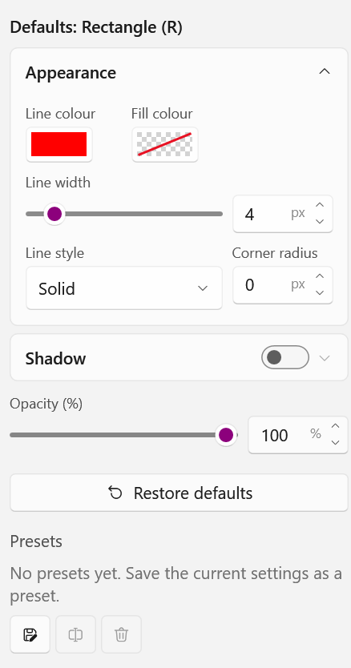
Presets and defaults
At the end of the properties panel you find the tool's presets – saved combinations of all settings, e.g. “red warning frame” or “yellow note”.
- Save: disk icon – saves the current settings under a name (same name = overwrite, after asking).
- Apply: click a preset – without a selection it becomes the tool's default, with a selection it is applied to the selected objects.
- Rename and Delete with the buttons next to it. Text comes with built-in presets (Label, Warning, Note, Hint) that can be restored.
Restore defaults (visible only when nothing is selected) resets all settings of the tool to the built-in values. Presets are kept.
Colours and colour picker
Click a colour field to open the colour selection with a colour area, hex value (#RRGGBB or with opacity #AARRGGBB), palette and recently used colours. None makes the colour transparent (e.g. a rectangle without fill).
With the colour picker (“Pick colour from image”) click a spot in the image to take exactly that colour. Esc cancels.
Editing objects
With the select tool (V) you select, move and change existing objects. The most important actions:
| Action | How |
|---|---|
| Select | Click the object; several with Shift or Ctrl + click or by dragging a frame; Ctrl+A selects all. |
| Next / previous | Tab / Shift+Tab (focus on the canvas) |
| Move | Drag; arrow keys by 1 px, with Shift by 10 px. |
| Resize | Drag the handles (Shift = keep aspect ratio); Alt+arrow keys by 1 px (with Shift 10 px). |
| Rotate | Round handle above the selection (Shift = 15° steps) or [ / ]; in the panel under Rotation. |
| Edit text | Double-click text, callout or stamp; finish with Ctrl+Enter, Esc or a click outside. |
| Duplicate | Ctrl+D |
| Delete | Del |
| Order | Ctrl+] bring forward, Ctrl+[ send backward, with Shift to front/back. |
| Context menu | Right-click: Cut, Copy, Paste, Paste as image object, Insert image…, Duplicate, Delete, Order, Lock. |
| Lock | Locked objects cannot be moved by accident (context menu or lock in the layers). |
You can also copy objects between two editor windows with Ctrl+C and Ctrl+V.
Layers
The Layers tab in the properties panel lists all objects – the frontmost at the top. The list is linked to the canvas: a click selects the object.
- Eye – hide and show an object (hidden objects are not part of the saved image either).
- Lock – lock or unlock an object.
- Drag – changes the order (front/back).
- Double-click the name – rename.
Objects outside a crop are marked in the list; they are not visible in the result.
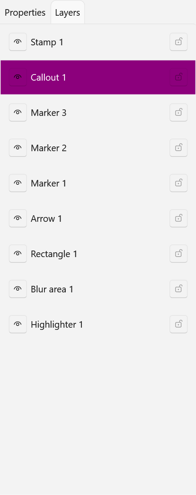
Undo and redo
Every change – including cropping and removing image areas – can be undone with Ctrl+Z and redone with Ctrl+Y (or Ctrl+Shift+Z). Several quick changes to the same value are merged into one step.
Tools
Choose a tool in the tool bar on the left or with its key. Shift+F1 opens the help right at the current tool. When dragging, almost everywhere Shift keeps proportions (square, circle, 15° angle) and Alt draws from the centre.
| Tool | Key | Used for | |
|---|---|---|---|
| Selecting | |||
| Select | V | Select, move, change objects | |
| Shapes and lines | |||
| Rectangle | R | Frames, areas, rounded corners | |
| Ellipse | E | Circling things | |
| Line | L | Straight lines | |
| Arrow | A | Pointing at something | |
| Triangle | G | Warning and direction signs | |
| Polygon | P | Any polygon | |
| Labelling | |||
| Text | T | Labels | |
| Numbered marker | M | Steps 1, 2, 3 … | |
| Callout | K | Text with a tail | |
| Stamp | S | “APPROVED”, “DRAFT” … | |
| Emoji | J | Colour emojis | |
| Image | I | Logos, icons, more images | |
| Freehand | |||
| Pen | B | Freehand drawing | |
| Highlighter | H | Highlighting text | |
| Eraser | X | Removing strokes | |
| Hiding and emphasising | |||
| Blur / pixelate / redact | U | Making confidential data unreadable | |
| Magnifier | Z | Enlarging details | |
| Editing the image | |||
| Select and remove area | W | Making parts of the screenshot transparent | |
| Background eraser | D | Painting transparency | |
| Crop | C | Choosing the visible area | |
Select V
The select tool is the standard tool for working with existing objects. All actions – selecting, moving, resizing, rotating, ordering – are described in Editing objects. Some objects have extra handles:
- Callout: round handle at the tail – drag the tail freely.
- Magnifier: source and magnified view can be moved separately.
- Polygon: every corner is a handle; double-click an edge to add a point.
- Arrow/line: handles at start and end (Shift snaps to 15°).
With objects selected, the properties panel shows their values. Shift+F1 opens the help for the type of the selected objects.
Shapes
Drag shapes with the mouse button held down. Shift creates a square or circle, Alt draws from the centre.
Common settings in the Appearance card:
- Line colour and fill colour (None = frame only)
- Line width and line style (solid, dashed, dotted, dash-dot)
- Opacity of the whole object
- Shadow with colour, size (offset to the bottom right) and blur
- Rotation (for selected objects)

Rectangle R
For frames around important spots or semi-transparent areas. Additionally: corner radius for rounded corners.
 Ellipse E
Ellipse E
For circling things. With Shift you get a circle.
 Triangle G
Triangle G
Isosceles triangle in the dragged frame – rotatable for direction signs.
 Polygon P
Polygon P
- Click once for every corner (Shift snaps the angle to 15°).
- Backspace removes the last point.
- Double-click or Enter closes the polygon, Esc cancels.
Later you move individual corners with the select tool; double-clicking an edge adds a point.
Lines and arrows
Drag lines and arrows from the start to the end point. Shift snaps the angle to 15° steps, Alt draws from the centre.
- Start and end: none, arrow, open arrow, circle or square – independently for both ends.
- Line colour, line width, line style, opacity
- Outline with colour, width and blur – a border around line and arrowheads so they stay readable on any background.
- Shadow
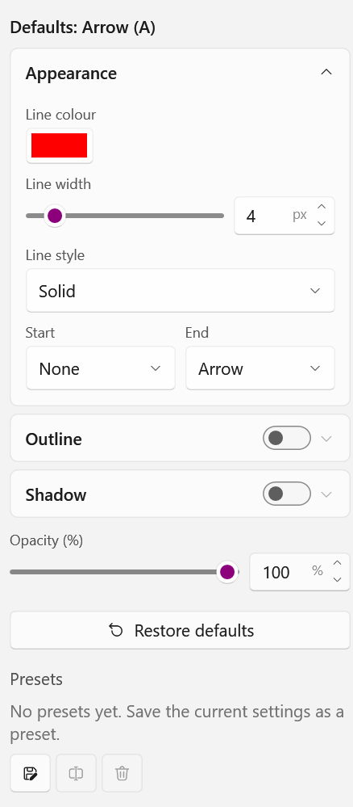
 Line L
Line L
Straight line without heads (heads can be added later).
 Arrow A
Arrow A
Line with an arrowhead at the end. Line and arrow have separate defaults.
Text T
- A click places text that grows with every line.
- Dragging creates a text box with a fixed width and automatic word wrap.
- Type directly on the canvas; Enter starts a new line, Ctrl+Enter or Esc finishes.
- Double-click existing text to edit it.
Settings:
- Font: family, typeface, size, bold, italic, underline, strikethrough, alignment
- Text colour
- Outline with colour, width and soft edge (Outline blur)
- Background with colour and padding – like a label
- Shadow, opacity, rotation
Built-in presets: Label, Warning, Note and Hint.
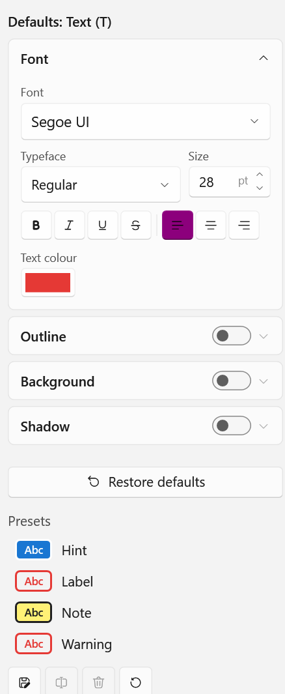
Callout K
- Drag the frame of the bubble (a simple click creates a bubble of default size).
- Type the text – it is wrapped and centred; if it doesn't fit, the bubble grows downwards. Ctrl+Enter or Esc finishes.
- With the select tool drag the round handle at the tail to the target. The tail automatically moves to the matching side of the bubble.
Settings:
- Shape & tail: rounded rectangle (with corner radius), ellipse or thought bubble; tail width, Curved tail and Bend the other way; rotation
- Font as for text
- Colours: text colour, background, padding
- Glow: coloured border around bubble and tail, with width and blur
- Shadow, opacity, presets
Corner handles only resize the bubble (the font stays, the text is re-wrapped). When moved, the tail moves along.
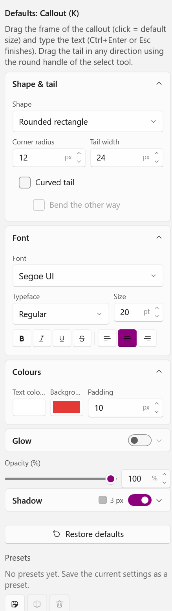
 Stamp S
Stamp S
A stamp is a single-colour frame with text that looks like a real rubber stamp – ideal for “APPROVED”, “DRAFT” or “CONFIDENTIAL”.
- Click on the canvas – the stamp appears with its text selected.
- Type your own text (multiple lines possible) or pick one from Quick text in the panel.
- Ctrl+Enter or Esc finishes.
- Colour and frame: rectangle, rounded, double frame, oval; frame thickness
- Stamp look: frayed edges, gaps, speckles, scratches; New pattern creates a different pattern
- Tilt (default −8°), font with bold/italic/underline/strikethrough
- Ink look: the colour is multiplied with the image as if real ink was pressed on
- Opacity
A stamp adapts to the length of its text. Dragging a corner handle scales frame and font together. The text stamped last becomes the default text.
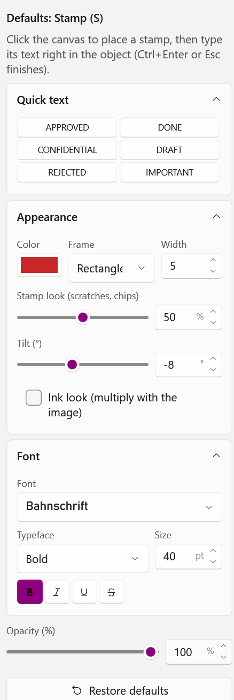
Numbered marker M
Markers number steps: every click places the next free number. Dragging additionally creates a tail pointing at the target.
- Shape: circle, square, rounded square; size
- Fill colour, number colour, outline colour
- First number for new markers
- Renumber by layer order or by creation order – useful after markers were deleted
- Shadow
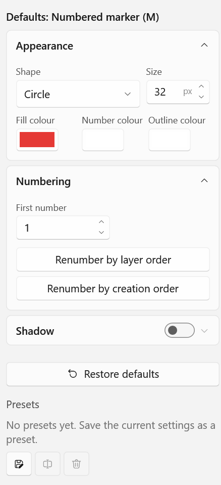
Freehand
Pen B
Draw with the mouse button held down or with a graphics pen. Every stroke becomes its own object.
- Colour, line width, opacity
- Smoothing – calms shaky strokes
- Pen pressure changes width – for graphics tablets
With the ruler shown you get straight strokes.
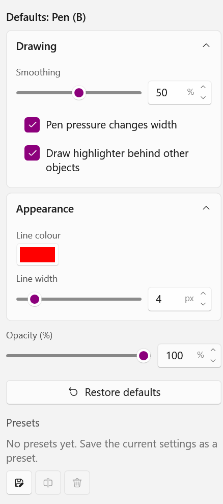
Highlighter H
Like the pen, but wide and semi-transparent – for highlighting text. The option Draw highlighter behind other objects places all highlighter strokes of the document below the other objects.
Eraser X
Drag over strokes to remove them; on release all marked strokes are deleted (one undo step). With Erase all objects, not only strokes the eraser removes every object it touches.
The eraser removes objects. To make parts of the screenshot itself transparent, use the background eraser.
 Blur / pixelate / redact U
Blur / pixelate / redact U
Make names, email addresses or passwords unreadable: drag an area (Shift = square). The area stays an object that can be moved or resized.
- Mode: pixelate, blur or redact (solid, with a colour)
- Strength / block size in pixels
- Shape: rectangle or ellipse; soft edge
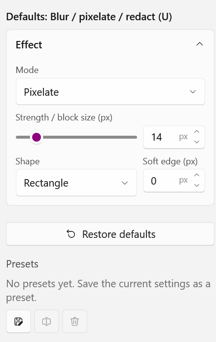
Security: a light blur can sometimes be reversed. Use Redact for sensitive data. Also always share the exported image, never the project file: the project contains the unchanged original.
Magnifier Z
The magnifier shows a part of the image enlarged at another place. Drag the source area; the magnified view appears next to it. With the select tool you move source and magnifier independently.
- Zoom, shape (circle or rectangle), border
- Show connector – lines between source and magnifier
- Show source frame
- Magnify base image only – without the objects on top
- Smooth scaling – off: pixels stay crisp
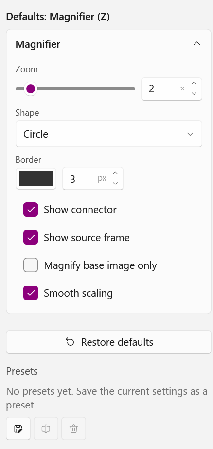
Emoji J
Insert colour emojis – all Windows emojis except country flags.
- Search for an emoji in the panel (English or German) or pick one via categories, Recently used and Favorites. Choose the skin tone above.
- Click on the canvas (default size) or drag an area (Shift = free, Alt = from the centre). Double-click or Enter in the picker inserts it in the middle of the image.
With an emoji selected, a click in the picker replaces it. Emojis can be rotated ([ / ]), flipped (Shift+H / Shift+V) and given opacity and shadow. Right-click an emoji in the picker to add it to or remove it from the favorites.
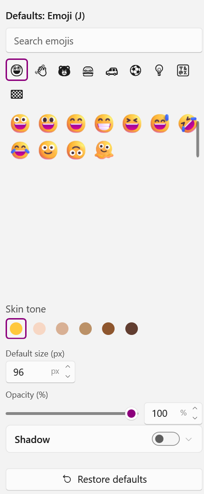
 Image I
Image I
Insert more images as objects – logos, icons, photos or SVG graphics.
- A click opens the file selection and places the image at its original size (at most 80 % of the screenshot).
- Dragging an area fits the image proportionally into the area.
- Dragging an image file onto the canvas inserts it at that spot.
- Ctrl+Shift+V inserts an image or a copied image file from the clipboard as an object.
- Insert image from file… in the panel or in the context menu.
Animated GIFs and multi-page TIFFs ask which frame to use. SVG graphics stay sharp at every zoom level.
Settings: size with Keep aspect ratio, Original size, Original ratio; rotation, flip, outline (follows the non-transparent parts of the image), shadow and opacity.
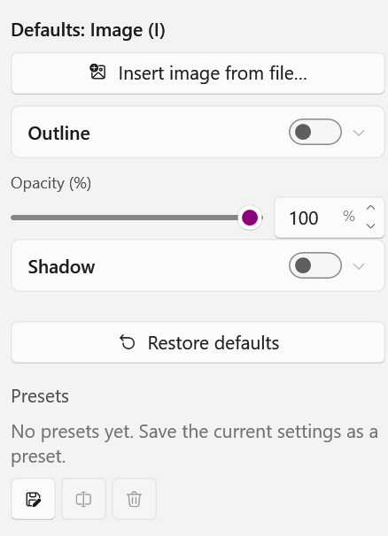
For security reasons, SVG graphics do not load external files or internet addresses; such content appears grey.
Removing image areas (cut-out)
These two tools make parts of the screenshot transparent – for example to cut out a window or remove a distracting background. Objects on top are not affected. The change is not permanent: Restore whole screenshot brings everything back. Transparent areas are see-through in a PNG; JPG and BMP fill them with white (or the background from the save options).
Select and remove area W
- Choose the selection shape: rectangle, ellipse, freehand (lasso) or magic wand (selects connected similar colours, with Colour tolerance).
- Drag or click. Shift adds to the selection, Alt subtracts.
- Del or Remove area makes the area transparent – optionally with a soft edge.
More commands: Invert selection (Ctrl+Shift+I) – handy to remove everything except the selected area –, Select all, Deselect, Crop to visible area.
The area selection itself is not an object; it is cleared when you switch tools.
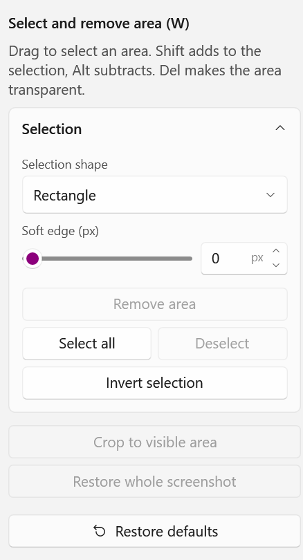
Background eraser D
Paint over the screenshot to make those spots transparent. Hold Alt to paint them back.
- Size of the brush (also [ / ])
- Hardness – soft or hard brush edge
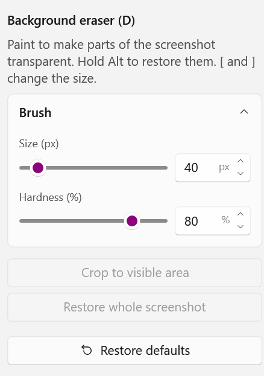
Crop C
In crop mode you define the visible part of the image. Cropping is not permanent: the whole image is kept and you can enlarge the area again later.
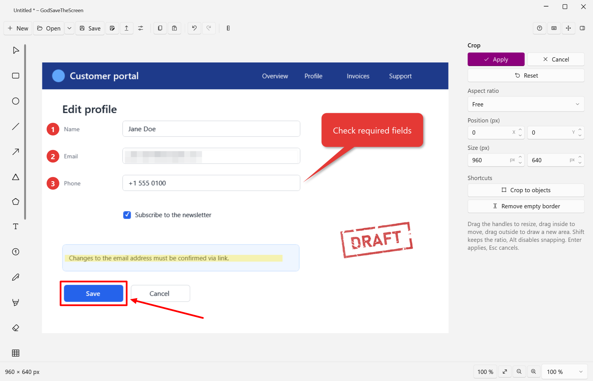
- Drag the handles to resize, drag inside to move the frame, drag outside to draw a new area.
- Shift keeps the aspect ratio while dragging, Alt turns off snapping to edges, arrow keys move by 1 px.
- Aspect ratio: free, original, 1:1, 4:3, 3:2, 16:9, 9:16 or custom.
- Enter position and size exactly in pixels.
- Shortcuts: Crop to objects (only the area with objects) and Remove empty border (cut off a single-colour border).
- Apply or Enter ends the mode, Cancel or Esc discards the change, Reset selects the whole image again.
Saving and sharing
There are several ways to use the result – depending on whether you want to share the image right away, store it as a file or keep editing it later.
Saving
Ctrl+S saves to where the document came from: an opened project as a project again, an opened image file as an image again. For a new capture a dialog asks for location and file type – the project format is offered first. Ctrl+Shift+S (Save as…) always asks.
When you close an editor with unsaved changes, GodSaveTheScreen asks: Save, Save as project, Don't save or Cancel.
Export and save options
Export… writes the result as an image file without making the document refer to that file – ideal when you keep working on the project. The image contains all visible objects and the crop.
The save options (slider icon in the command bar) define:
- Format: PNG, JPEG, BMP, GIF, TIFF or JPEG XR
- Quality (JPEG, JPEG XR), Interlaced (PNG), Compression (TIFF), Lossless (JPEG XR)
- Background for transparent areas for formats without transparency
You can open every image format that Windows knows.
Clipboard
| Key | Effect |
|---|---|
| Ctrl+C | With a selection: copy the selected objects (to paste them in an editor). Without: copy the finished image. |
| Ctrl+Shift+C | Always copy the finished image. |
| Ctrl+X | Cut the selected objects. |
| Ctrl+V | Paste copied objects; if the clipboard contains an image, it opens in a new editor window. |
| Ctrl+Shift+V | Insert the clipboard image as an image object into the current image. |
The image is copied with transparency (PNG) and additionally in the classic Windows format so that every program can paste it.
Drag and drop
- Out: drag the drag handle on the right of the command bar into another program (email, chat, Explorer) – the finished image is handed over.
- In: dragging image files onto the canvas inserts them as image objects. With Ctrl held down, outside the canvas or for project files a new editor window opens instead.
Projects (.gsts)
A project stores the original image, the crop, removed areas and all objects in one file. When you open it again, everything is still editable – ideal for guides you want to update.
Because the project contains the unchanged original, blurred or redacted areas remain readable inside it. Always share an exported image with others.
Recent files
The last 15 opened or saved files are in the start window, the tray menu, the editor under the arrow next to Open and the jump list on the taskbar. Files that no longer exist are greyed out and can be removed; Clear list deletes all entries.
Automatic backup
Unsaved work is backed up regularly in the background. If GodSaveTheScreen ends unexpectedly, it offers to recover the documents on the next start. Save recovered documents afterwards.
Settings
Open the settings from the start window or the tray menu. Changes take effect immediately. The Help button at the bottom left or Shift+F1 jumps to the description of the current page.
General
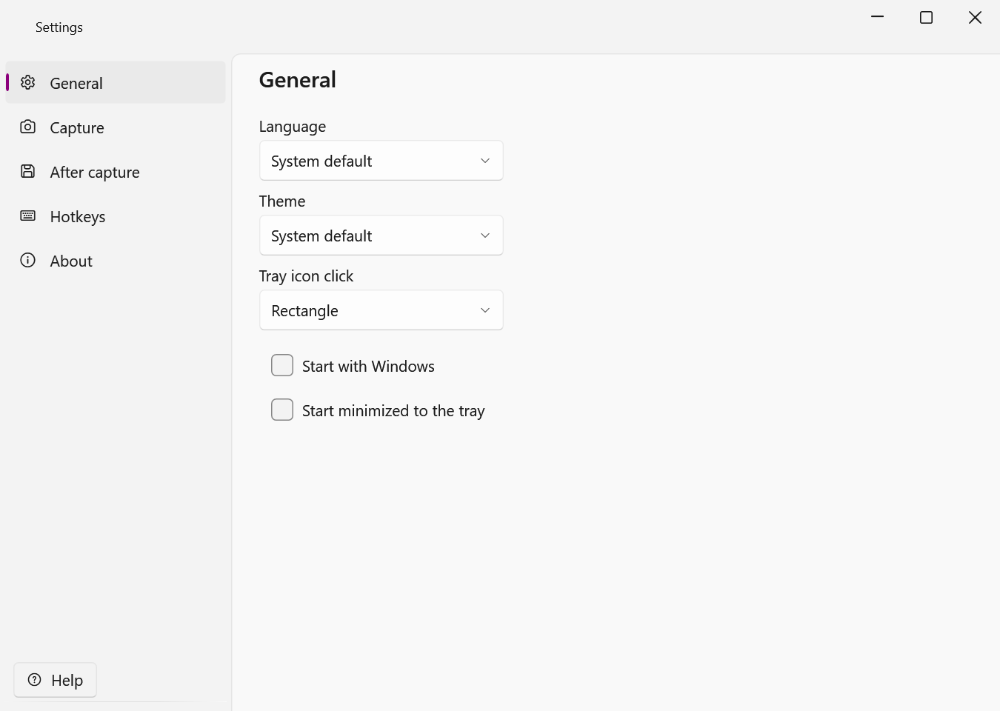
- Language: system default, German or English (takes effect after a restart). The help opens in the selected language.
- Theme: system default, light or dark.
- Tray icon click: which capture mode starts, open the start window, or do nothing.
- Start with Windows and Start minimized to the tray (without the start window).
Capture
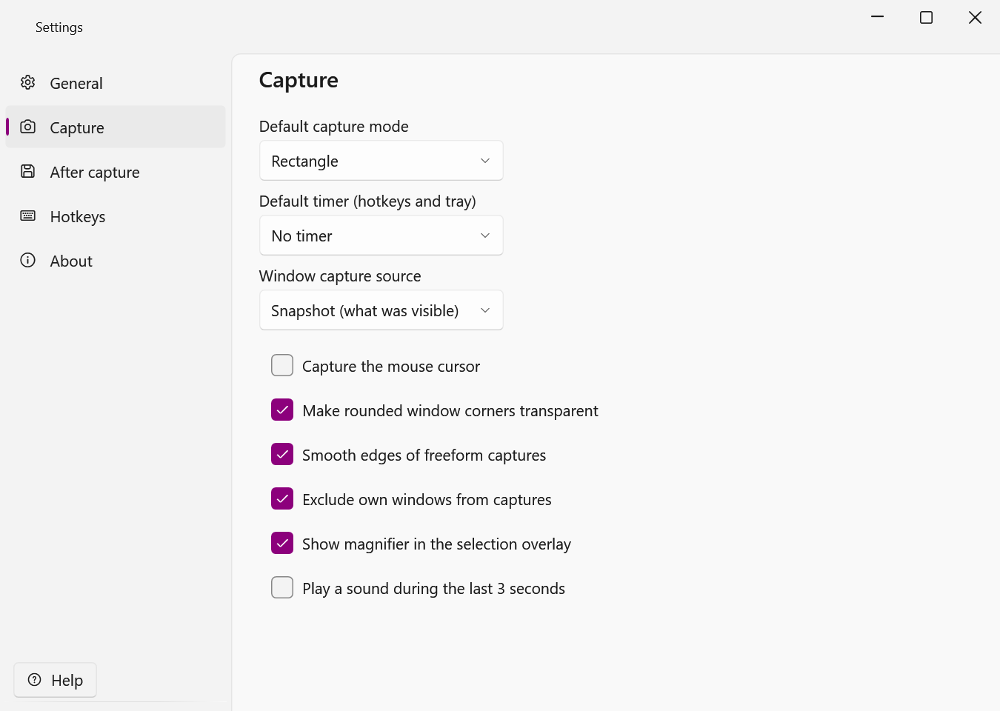
- Default capture mode and default timer (for shortcuts and the tray).
- Window capture source: Snapshot (what was visible) or Window content (includes covered parts).
- Capture the mouse cursor.
- Make rounded window corners transparent (Windows 11).
- Smooth edges of freeform captures.
- Exclude own windows from captures.
- Show magnifier in the selection overlay.
- Play a sound during the last 3 seconds (timer).
After capture
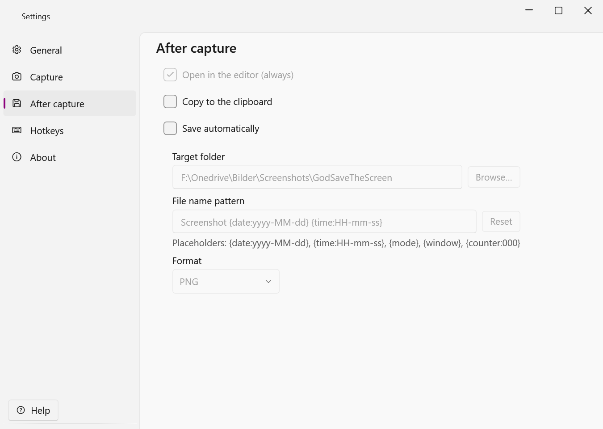
- Open in the editor, Copy to the clipboard and Save automatically – each can be turned on or off.
- Target folder and format for automatic saving.
- File name pattern with placeholders:
Reset restores the default pattern Screenshot {date:yyyy-MM-dd} {time:HH-mm-ss}.
Placeholder Meaning {date:yyyy-MM-dd} Date (any format) {time:HH-mm-ss} Time {mode} Capture mode {window} Title of the captured window {counter:000} Running number
Hotkeys
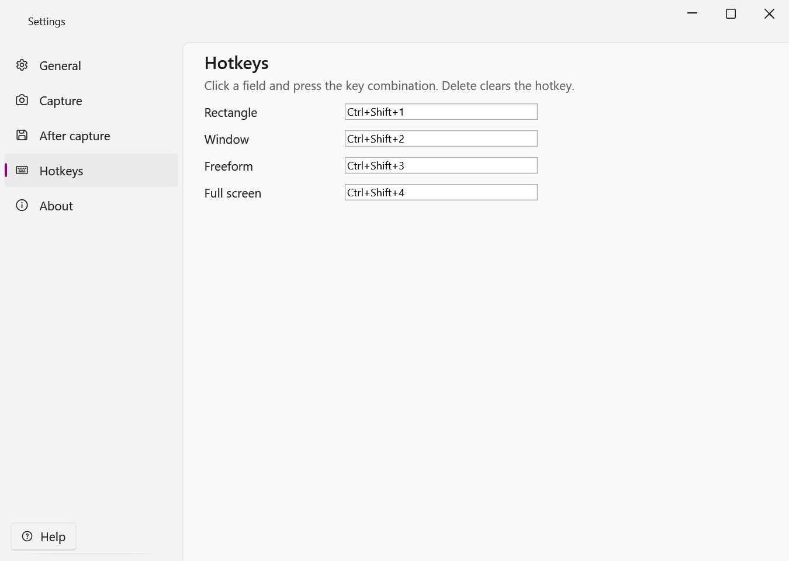
Click a field and press the desired key combination; Del clears the hotkey. Next to every field you see whether the hotkey is active or already used by Windows or another program. For the Print Screen key there is a direct link to the matching Windows setting (see Print Screen key).
About
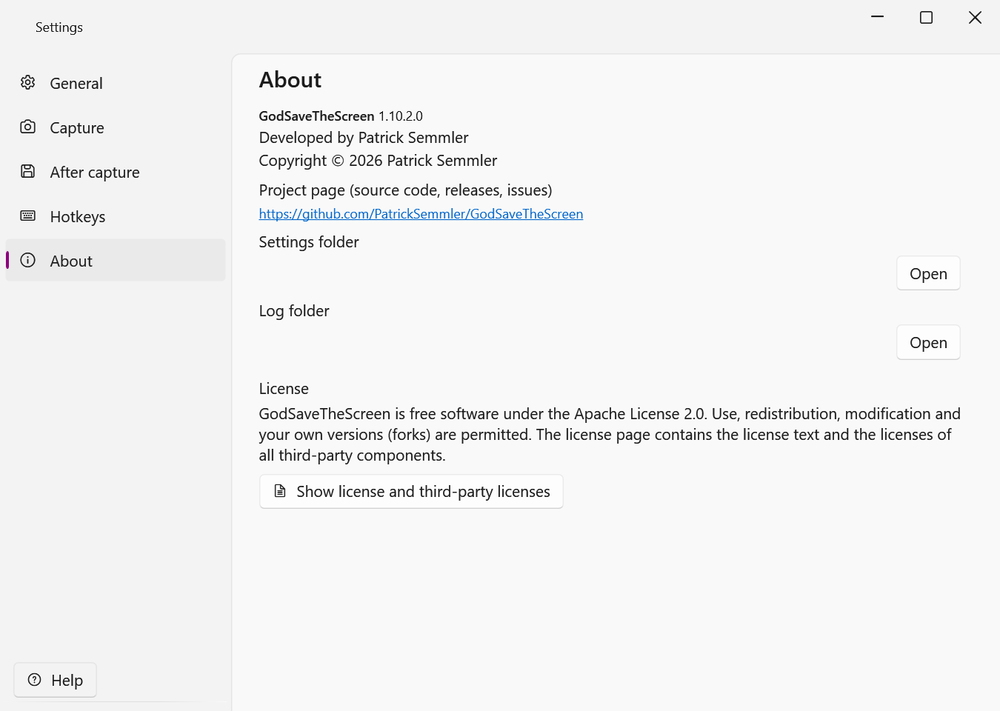
Shows the program version, opens the settings folder and the log folder, and shows the copyright and license. Show license and third-party licenses opens the license page in your browser: a summary of the Apache License 2.0, notes on forks, the full license text and all third-party components with their licenses.
Keyboard shortcuts
The complete list – with your own global shortcuts and a search box – is available at any time in the program with Ctrl+F1.
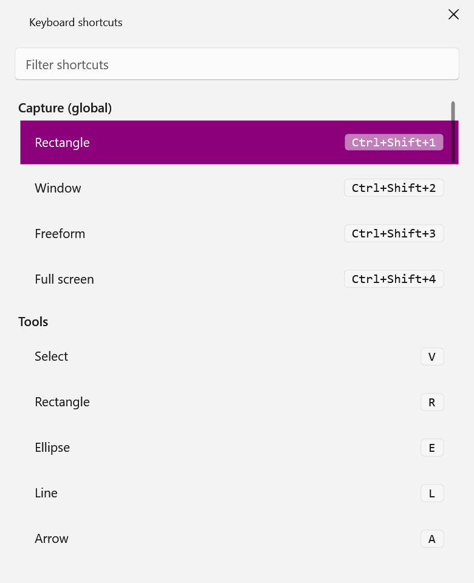
Help and capture
| F1 | Open this help |
| Shift+F1 | Help for the current tool, the selection or the settings page |
| Ctrl+F1 | Show all keyboard shortcuts |
| Ctrl+Shift+1 … 4 | Capture rectangle / window / freeform / full screen (default, changeable) |
In the editor
| File | |
| Ctrl+O | Open |
| Ctrl+S / Ctrl+Shift+S | Save / Save as |
| Ctrl+V / Ctrl+Shift+V | Paste / Paste image as object |
| Edit | |
| Ctrl+Z / Ctrl+Y | Undo / Redo |
| Ctrl+C / Ctrl+Shift+C | Copy (selection or image) / Copy image |
| Ctrl+X / Ctrl+D / Del | Cut / Duplicate / Delete |
| Ctrl+A | Select all |
| Ctrl+] / Ctrl+[ | Bring forward / send backward (with Shift: to front / back) |
| View | |
| Ctrl++ / Ctrl+- | Zoom in / out (also Ctrl + mouse wheel) |
| Ctrl+0 / Ctrl+1 | Fit / 100 % |
| Space + drag | Pan the view |
| Ctrl+R | Ruler on/off |
| Objects | |
| Tab / Shift+Tab | Next / previous object |
| Arrow keys | Move by 1 px (with Shift 10 px) |
| Alt+arrow keys | Resize by 1 px (with Shift 10 px) |
| [ / ] | Rotate by 15° |
| Shift+H / Shift+V | Flip emoji or image horizontally / vertically |
| Removing areas and cropping | |
| Shift / Alt | Add to / subtract from the area selection |
| Del / Ctrl+Shift+I | Remove area / invert selection |
| Alt / [ ] | Background eraser: restore / size |
| Enter / Esc | Apply / cancel crop |
The tool keys are listed in the tool overview.
Tips and troubleshooting
A shortcut does not work
The combination is probably already used by Windows or another program. Under Settings → Hotkeys you see the status of every shortcut and can choose a different combination. While the screen is locked, shortcuts deliberately do nothing.
The Print Screen key opens the Snipping Tool
In Windows under Settings → Accessibility → Keyboard turn off “Use the Print screen button to open screen capture”, then assign the key under Hotkeys.
Removing confidential data safely
Use Redact instead of a light blur and share only exported images, never project files.
Very large images
Before opening very large images (more than 100 million pixels) GodSaveTheScreen asks for confirmation, because editing them needs a lot of memory.
The help does not open
The help files GodSaveTheScreen-Help.html and GodSaveTheScreen-Hilfe.html must be in the same folder as GodSaveTheScreen.exe. They open in your default browser.
Deployment in companies
For Group Policy, Intune or SCCM there is GodSaveTheScreen-…-x64.msi (or -arm64.msi). Without parameters it installs only for the user running it; set ALLUSERS=1 to install for all users. Windows picks the language (English/German) automatically.
- For all users, silently: msiexec /i GodSaveTheScreen-…-x64.msi /qn ALLUSERS=1
- Different folder: INSTALLFOLDER="D:\Tools\GodSaveTheScreen"
- Setup EXE silently: GodSaveTheScreen-…-Setup.exe /quiet InstallScope=PerMachine (/? lists all switches)
Newer versions automatically replace an existing installation of the same kind (for the user or for all users); the users’ settings are kept.
Reporting problems
The logs help with problems. Open the log folder under Settings → About.